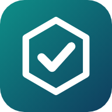
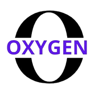

تطبيقات المكتب (أندرويد)

⬇ تطبيق متقنغرفة العمليات — موقع متقن فقط

⬇ تطبيق أكسجينالتحكم والإعدادات — موقع أكسجين فقط
- افتح هذه الصفحة من متصفح كروم مباشرة (وليس من داخل واتساب أو فيسبوك).
- لكل تطبيق موقعه ورمزه: تطبيق متقن يعمل على موقع متقن، وتطبيق أكسجين على موقع أكسجين — لا تبديل بينهما.
- التطبيقان بمعرّفين جديدين فيُثبَّتان بجانب القديمين («غرفة العمليات» و«التحكم والإعدادات»)؛ احذف القديمين بعد أن تطمئن.
- اسمح لكروم بتثبيت التطبيقات: الإعدادات ← «تثبيت تطبيقات غير معروفة».
- افتح التطبيق واكتب الرمز السري مرة واحدة.
لو توقف التحميل أعد المحاولة بشبكة أخرى. التحديثات اللاحقة تصل تلقائيًا دون إعادة تثبيت.